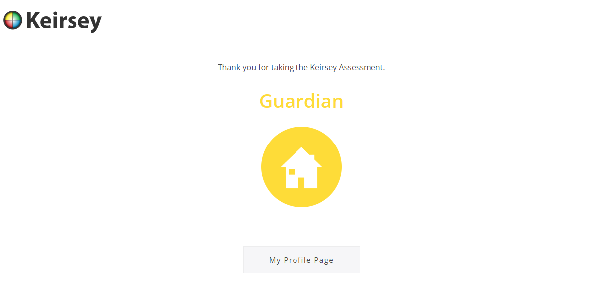

Unveiling the Real Me: My Personality
Critical thinking allows me to analyze and evaluate information thoughtfully, significantly impacting my academic life. It helps me understand complex concepts and instructions, aiding in accomplishing tasks efficiently.
My love for reading further enhances this trait. By engaging with diverse materials—from textbooks to literature—I expose myself to various viewpoints and ideas, sharpening my ability to synthesize information.
Critical thinking also enhances my contributions to discussions and debates. I engage deeply with the material, asking insightful questions and providing well-reasoned arguments during group projects.
Ultimately, my ability to think critically, combined with my passion for reading, empowers me to tackle academic challenges with confidence, preparing me for real-world problem-solving situations.
My Hero: Andrew Wommack
"Life is not a dress rehearsal - wake up every day excited to live out your purpose." – Andrew Wommack
Andrew Wommack is a prominent teacher of grace, healing, and faith. His teachings focus on the importance of understanding God’s Word, which has deeply influenced my spiritual journey.
I admire how he simplifies complex biblical principles, making them applicable to daily life. His practical approach has inspired me to delve deeper into scripture and apply it in my life.
Andrew’s teachings encourage believers to trust in God’s promises, even in challenging circumstances. His faith-based leadership has shown me how to lean on my spiritual strength.
As a spiritual guide, he represents a balance of strength and humility. His work in ministry serves as a reminder to me of the power of perseverance, faith, and hope.
Personality Test: Keirsey Temperament Sorter
Reflection on Test Validity
According to the Keirsey Temperament Sorter, I am categorized as a "Guardian." This resonates with me as I strongly identify with traits such as dependability, attention to detail, and a preference for structure and stability. I believe that personality tests can offer valuable insights, but I also understand that they are only one way to look at the complex nature of human behavior. In my case, I feel the test captured key aspects of my personality accurately.